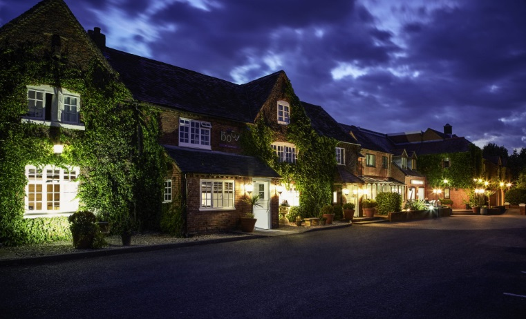

2019 Annual Rally
Coughton Court – Sunday 23rd June
· 14th April 2019
The National Trust property of Coughton Court will be hosting our Annual Rally this year and once again we will be joined by both the Triumph Razoredge Club and the Triumph Roadster Club.
The Annual Dinner the evening before the rally will be about half an hour cross country drive away in the Honiley Court Hotel which we have used before.
The hotel has a large car park and as usual they will partition off an area at the rear of the building for our Triumphs. I’ve also checked with them and car trailers can be left in the car park but please, if you bring one, try and park it well out of the way of the main parking areas near the building itself. Rooms are £75 for the Saturday night and £65 for Friday/Sunday nights bed and breakfast double occupancy (single occupancy is £10 per night less).
Please, please if you have any special requirements do let the hotel know at the time of booking as it’s much easier for them to make the arrangements at that stage than try and swap things around when you arrive. To book just call 01926 484234 and say you are with the Triumph club and give them the booking number 348056 or mention Tim Newings’ name.
The kitchens will need to know in advance what you would like to eat on Saturday evening at the Annual Dinner. Ideally could you let them know when you book your room, but if that’s inconvenient, or for those who have already booked please could you place your order no later than Friday June 7th. The cost is £25 per head (with a supplement for the beef) and this will be added to your room bill.

All Club members have a pre-arranged admission to Coughton Court and so do not need to pay on the day. The National Trust are allowing us exclusive use of the East end of their car park for the Triumphs. Those with modern cars will be asked to park with the other visitors in the main car parks and those with spares to sell can park in a field adjoining the rally site.
Non-National Trust members who want to look round the house and gardens will be offered the chance to take a membership giving free access to 500 places, or alternatively to pay the general admission fee.
National Trust members: please get your membership tickets scanned as the house will get credit for your visit.
We have been asked to get as many cars in place before 10.30 before the normal opening time. This means that people coming after 10.30 simply use the main public entrance that is signed on the main A435. However before this time the entrance that we will need to use is the coach entrance a little further South. At a cross roads you turn down Coughton Fields Lane and left into the estate and then drive all the way through the grounds in front of the house and to the car parks. Club signs will direct you and I’ll set up these and the gazebos the afternoon before. However please try not to arrive before 9.30 unless you are helping with the final arrangements.
As usual, once at the rally site there will be separate parking areas for Roadsters, Renowns and Mayflowers, for visiting classics, and for those with spares to sell. Dogs are permitted on leads in the rally site. Once in and parked up please head for the gazebo to meet other members, get final timing and a schedule for the day, with the events due to finish about 4pm. The usual National Trust refreshments, toilets and shops are nearby.